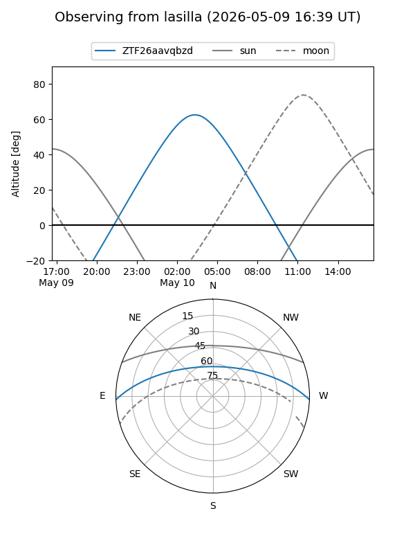
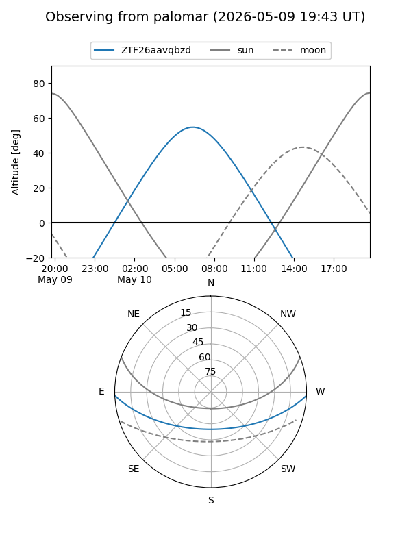

ZTF26aavqbzd
Target ZTF26aavqbzd at 2026-05-10 07:39
Aliases and brokers:
FINK: link
Lasair: link
ALeRCE: link
alt names
ZTF26aavqbzd (ztf,fink_ztf)
Coordinates:
equatorial (ra, dec) = 206.7681,-1.72252
equatorial (HMS+DMS) = 13:47:04.34,-01:43:21.07
galactic (l, b) = (330.0494,+58.18962)
Flags:
Photometry:
last ztfg=20.04
1 ztfg detections
Lightcurve
Visibility


Additional plots